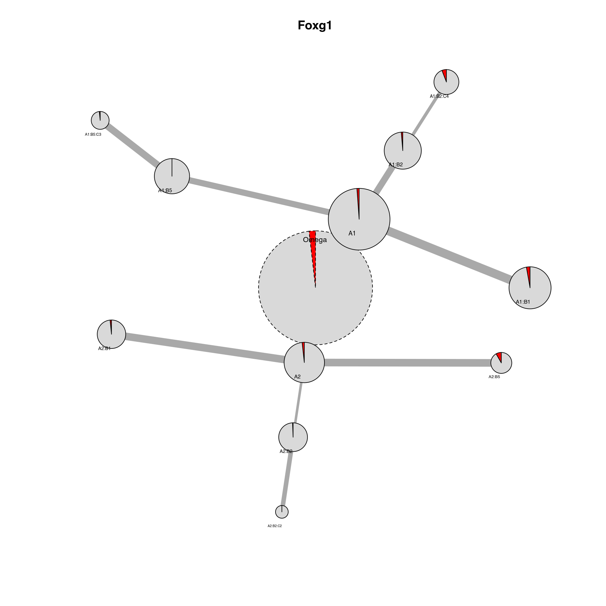

Tutorial for scEpigenomics object (SingleCellExperiment)
Pacome Prompsy
5/17/2022
Source:vignettes/scEpigenomics.Rmd
scEpigenomics.RmdIn this article, we will show how to run IDclust on a Seurat object of a single- cell RNA dataset of the mouse brain from “Joint profiling of histone modifications and transcriptome in single cells from mouse brain,Chenxu Zhu, Yanxiao Zhang, Yang Eric Li, Jacinta Lucero, . Margarita Behrens, Bing Ren, Nature Methods, 2021 Paired-Tag”
Classical analysis of scRNA dataset with Seurat
Data
Download, extract & format scRNA of the mouse brain (Zhu et al., 2021) from the GEO portal.
set.seed(47)
# Download dataset
temp = tempfile()
tempdir = tempdir()
download.file("https://www.ncbi.nlm.nih.gov/geo/download/?acc=GSE152020&format=file&file=GSE152020%5FPaired%2DTag%5FH3K27ac%5FDNA%5Ffiltered%5Fmatrix%2Etar%2Egz",
temp, quiet = TRUE)
untar(temp, exdir = tempdir)
# Download metadata
annot = tempfile()
download.file("http://catlas.org/pairedTag/cellbrowser/Paired-tag/meta.tsv", annot,
quiet = TRUE)
metadata = read.table(annot, sep = "\t", header = TRUE)
rownames(metadata) = metadata$Cell_ID
metadata = metadata[which(metadata$Target == "H3K27ac"), ]
features = read.table(file.path(tempdir, "04.Paired-Tag_H3K27ac_DNA_filtered_matrix",
"bins.tsv"), row.names = NULL, header = F, sep = "\t")[, 1, drop = F]
write.table(features, file = file.path(tempdir, "04.Paired-Tag_H3K27ac_DNA_filtered_matrix",
"features.tsv"), row.names = F, col.names = F, quote = F)
# Create Seurat object
out = ChromSCape::read_sparse_matrix(file.path(tempdir, "04.Paired-Tag_H3K27ac_DNA_filtered_matrix"))
out$datamatrix = out$datamatrix[, match(metadata$Cell_ID, gsub(".*_", "", colnames(out$datamatrix)))]
scExp = ChromSCape::create_scExp(out$datamatrix, out$annot_raw)
SummarizedExperiment::colData(scExp) = cbind(SingleCellExperiment::colData(scExp),
metadata)
# Subsample cells
scExp = scExp[, sample(ncol(scExp), 5000, replace = F)]Seurat Analysis
We then run a classical Seurat normalization and dimensionality reduction. We can plot the UMAP and color by the cell type.
# From Seurat tutorial -
# https://satijalab.org/seurat/articles/pbmc3k_tutorial.html
scExp <- ChromSCape::find_top_features(scExp, n = 1e+05, keep_others = FALSE, verbose = FALSE)
scExp <- ChromSCape::feature_annotation_scExp(scExp, ref = "mm10")
scExp <- ChromSCape::normalize_scExp(scExp, type = "TFIDF")
scExp <- ChromSCape::reduce_dims_scExp(scExp, dimension_reductions = c("PCA", "UMAP"),
n = 10, remove_PC = "Component_1", verbose = F)
ChromSCape::plot_reduced_dim_scExp(scExp, color_by = "Annotation", reduced_dim = "UMAP") ## Classical Louvain clustering
## Classical Louvain clustering
We can run a classical Louvain clustering to see the clusters.
scExp <- ChromSCape::find_clusters_louvain_scExp(scExp)
ChromSCape::plot_reduced_dim_scExp(scExp, color_by = "cell_cluster", reduced_dim = "UMAP")
Iterative Differential Clustering
We can now run the Iterative Differential Clustering, that will re-process and re-cluster each cluster iteratively and find subclusters with significant differences between each other.
By default for a Seurat object the processing_Seurat function is used for re-processing and the differential_edgeR_pseudobulk_LRT is used to find significant marker genes.
set.seed(47)
output_dir = tempdir()
scExp = iterative_differential_clustering(scExp, output_dir = output_dir, plotting = FALSE,
saving = TRUE, n_dims = 10, dim_red = "PCA", vizualization_dim_red = "UMAP",
processing_function = processing_ChromSCape, differential_function = differential_ChromSCape,
logFC.th = log2(1.5), qval.th = 0.01, quantile.activation = 0.7, min_frac_cell_assigned = 0.1,
limit = 5, limit_by_proportion = NULL, starting.resolution = 0.1, starting.k = 100,
resolution = 0.8, k = 100, verbose = FALSE)## ChromSCape::differential_activation - Calculating differential activation for A1 .
## ChromSCape::differential_activation - Calculating differential activation for A2 .
## ChromSCape::differential_activation - Calculating differential activation for B1 .
## ChromSCape::differential_activation - Calculating differential activation for B2 .
## ChromSCape::differential_activation - Calculating differential activation for B3 .
## ChromSCape::differential_activation - Calculating differential activation for B4 .
## ChromSCape::differential_activation - Calculating differential activation for B5 .
## ChromSCape::differential_activation - Calculating differential activation for B1 .
## ChromSCape::differential_activation - Calculating differential activation for B2 .
## ChromSCape::differential_activation - Calculating differential activation for B3 .
## ChromSCape::differential_activation - Calculating differential activation for B4 .
## ChromSCape::differential_activation - Calculating differential activation for B5 .
## ChromSCape::differential_activation - Calculating differential activation for C1 .
## ChromSCape::differential_activation - Calculating differential activation for C2 .
## ChromSCape::differential_activation - Calculating differential activation for C1 .
## ChromSCape::differential_activation - Calculating differential activation for C2 .
## ChromSCape::differential_activation - Calculating differential activation for C3 .
## ChromSCape::differential_activation - Calculating differential activation for C1 .
## ChromSCape::differential_activation - Calculating differential activation for C2 .
## ChromSCape::differential_activation - Calculating differential activation for C3 .
## ChromSCape::differential_activation - Calculating differential activation for C1 .
## ChromSCape::differential_activation - Calculating differential activation for C2 .
## ChromSCape::differential_activation - Calculating differential activation for C1 .
## ChromSCape::differential_activation - Calculating differential activation for C2 .
## ChromSCape::differential_activation - Calculating differential activation for C3 .
## ChromSCape::differential_activation - Calculating differential activation for C4 .
## ChromSCape::differential_activation - Calculating differential activation for D1 .
## ChromSCape::differential_activation - Calculating differential activation for D2 .We can now read in the output ‘IDC_summary’ object and plot the cluster hierarchies compared to the author clusters. On this plot, each node is a cluster. The colors represent the distribution of author cluster within each cluster. Link between nodes represent a hierarchy in the iteration. The width of the edges is proportional to the number of genes found.
IDC_summary = qs::qread(file.path(output_dir, "IDC_summary.qs"))
plot_cluster_network(scExp, IDC_summary = IDC_summary, color_by = "Annotation", legend = FALSE)
## Annotation Annotation_color
## 1 Astro_Myoc deeppink2
## 2 Astro_Nnat paleturquoise4
## 3 CA1 tomato4
## 4 CA23 gold3
## 5 CGE violet
## 6 CT palegoldenrod
## 7 DG darkolivegreen4
## 8 Endothelial salmon1
## 9 Ependymal mediumpurple2
## 10 L23 plum3
## 11 L4 darkseagreen3
## 12 L5 mediumorchid
## 13 L6 azure4
## 14 Microglia aquamarine2
## 15 NP orchid3
## 16 Oligo_MFOL peachpuff
## 17 Oligo_MOL steelblue2
## 18 OPC chocolate4
## 19 PT snow2
## 20 Pvalb ivory4
## 21 Sst deepskyblue3
## 22 Subiculum lightyellow2A ‘IDcluster’ column was added to the Seurat object, which we can now project the cluster found this way on the UMAP.
ChromSCape::plot_reduced_dim_scExp(scExp, reduced_dim = "UMAP", color_by = "IDcluster",
annotate_clusters = F)We can also plot particular marker genes in the cluster network by changing the ‘color_by’ parameter to a gene present in the Seurat object.
plot_cluster_network(scExp, IDC_summary = IDC_summary, color_by = "Foxg1", threshold_to_define_feature_active = 2,
legend = FALSE)
## Foxg1 Foxg1_color
## 1 Active red
## 2 Inactive grey85